THE CAST ACTS
battle-cast lane (BET F), 2026-08-08 — the three beats the game asked for and did not have,
and the weapon socket. Every arena frame here is stage.snapshot(): a synchronous render through the
shipping renderFrame(), so a 200 ms beat cannot be missed by screenshot timing.
Instrument: node tools/battle_cast_shots.mjs --port=3000.
The measured starting point is battle-presentation-inventory.md §6:
stage.clipsOf() returned ["idle","attack","hit","die"] for every body in the game, so
the victory pose of this game was the party standing in their idles,
using a tonic was a body standing perfectly still, and
fleeing was return;. It now returns seven kinds for the party and five for a monster.
| body | clips bound, before | clips bound, now |
|---|
| vesper / maren / lake | idle attack hit die | idle attack hit die item cheer walk |
| duskpad, bramble-shade, … | idle attack hit die | idle attack hit die walk |
1. THE VICTORY POSE
was: everybody standing still
 BEFORE —
BEFORE — seq-6-cheer.png, the audit's own capture of stage.cheer(). Two idles.
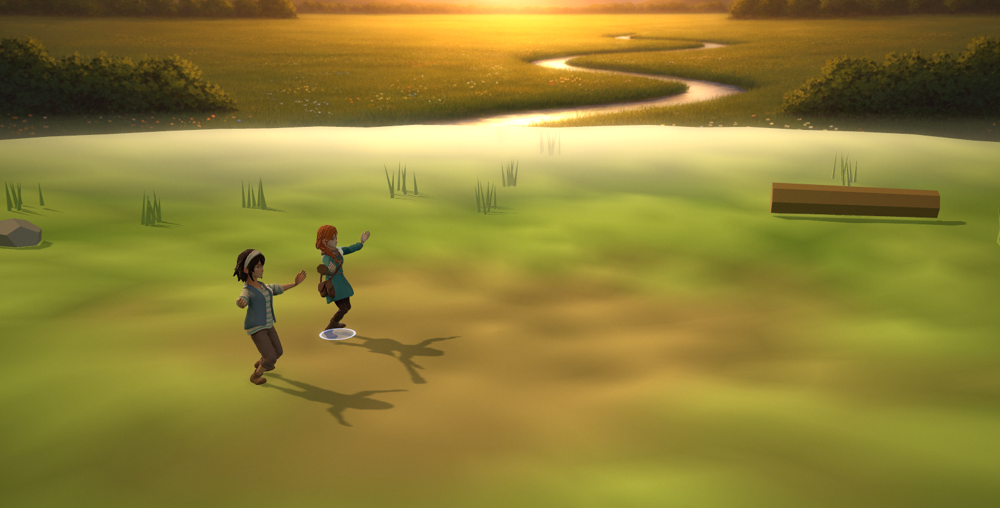
NOW — KayKit Cheer, retargeted, plus a 12 cm hop staggered 120 ms apart so it is a chorus and not a chorus line.
and on the real path, not just the verb
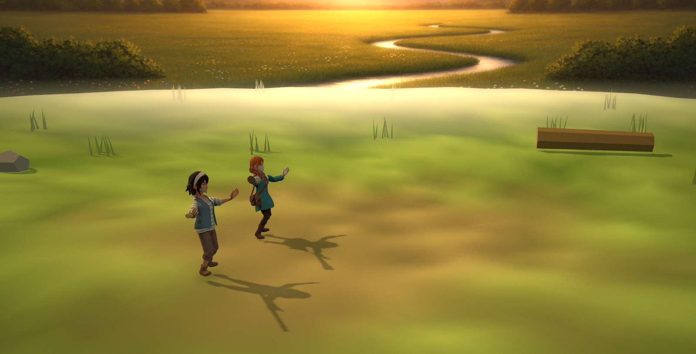
A whole battle played out by the autoplay seat; battle_turnbased calls stage.cheer() once, on the win.
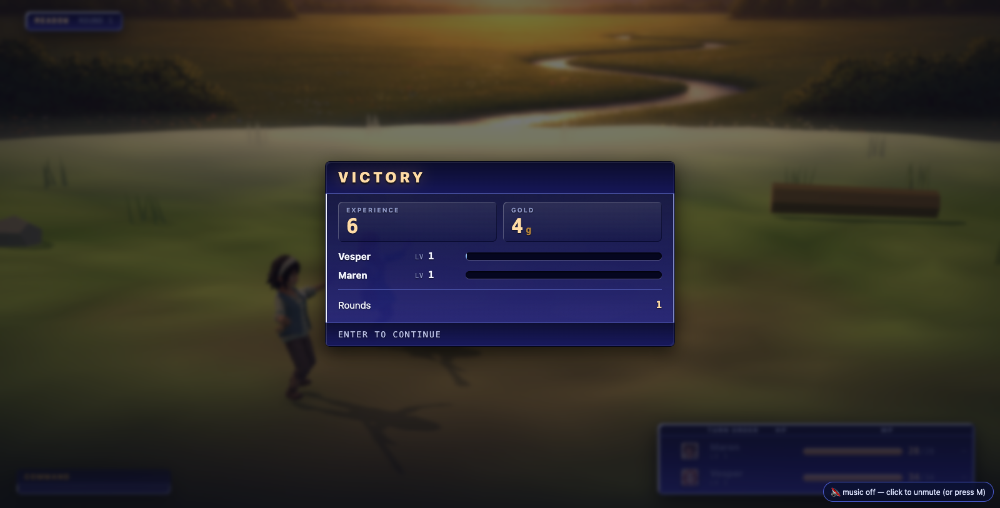
The same frame with the UI. Residual: the tally box covers the party it is celebrating — that is BET I's, not this lane's.
2. AN ITEM IS DRUNK
Was if (kind === 'item') { oneShot(b,'item'); return; } — a clip no body had, and an early
return that also killed the step. Now the KayKit Use_Item clip, a rising mote burst
(the one particle in the arena with negative gravity, because everything else it throws is an impact), and a
procedural dip-and-lift for any body without the clip.
+220 ms — the hands come up, the motes leave.
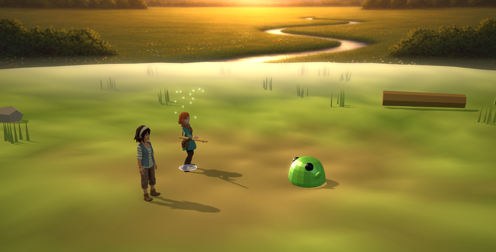
+460 ms
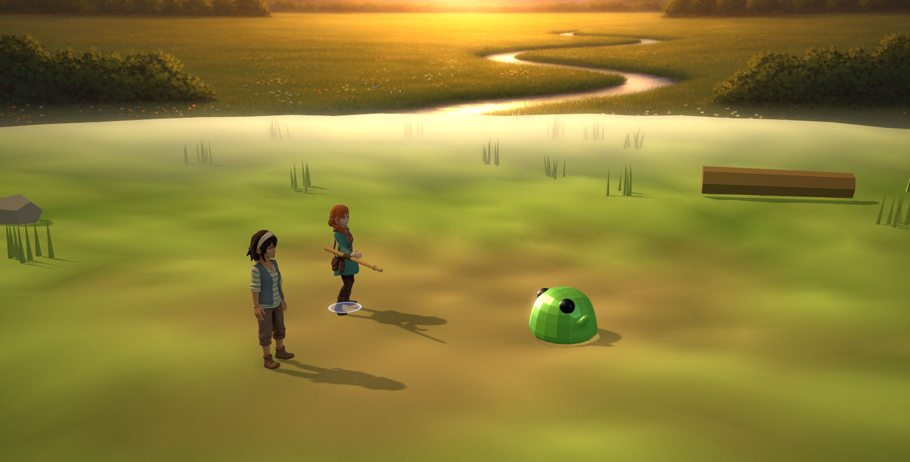
+780 ms — back to idle.
3. FLEEING LOOKS LIKE LEAVING
Was if (kind === 'flee') return;, and battle_turnbased did not even call it.
Now the body turns its back and runs on the rig's OWN walk clip played at 1.9× — which is why
this needed no retarget and why a monster can do it too. The result is two different pictures.
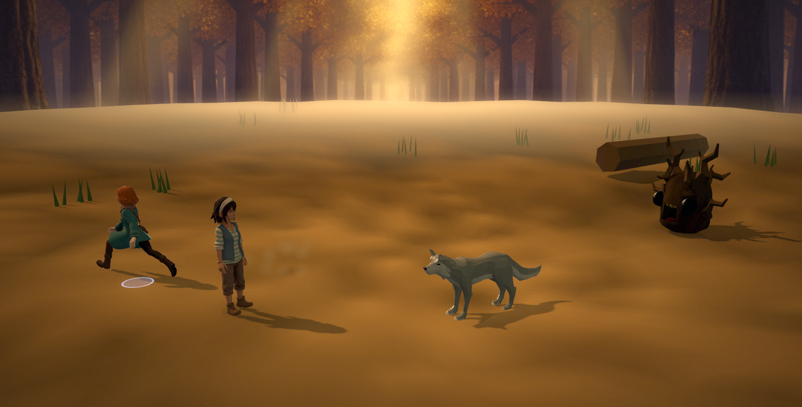
The attempt: turned, running, 2.6 m out.
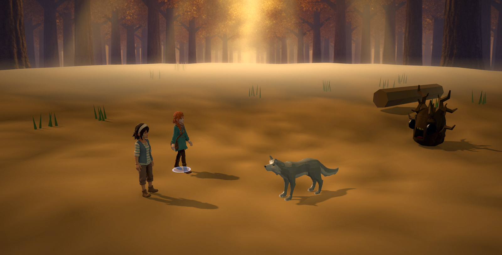
“Cornered — no escape!” — back in the slot, facing the enemy again.
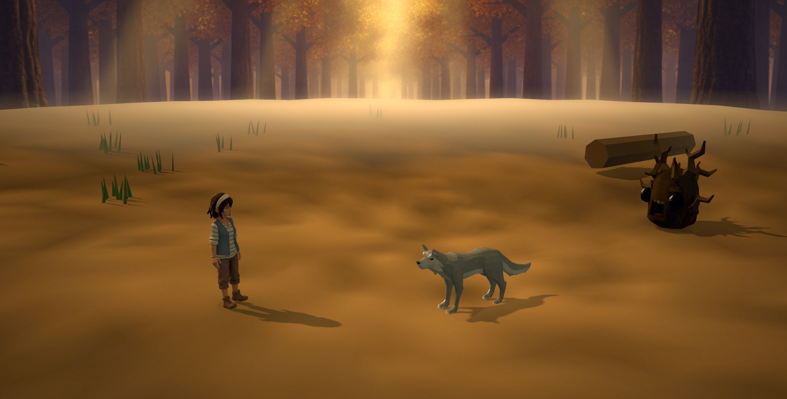
“Got away safely!” — kept going and thinned out. Maren is still standing there because only the fleeing body ran.
4. THE WEAPON SOCKET
Coordinator ruling: weapons appear in hand, attached at runtime to a socket on the hand bone, and the character
turnaround spec stays “hands empty” — no existing character asset is invalidated. The item id comes from GS's
equip slot through battle_turnbased's weaponOf callback; the arena still never reads GS.
The grip axis is derived from the rig (forearm→hand, expressed in the hand bone's own frame) rather than
guessed, and the bone's world scale is divided back out so the weapon is authored in metres.
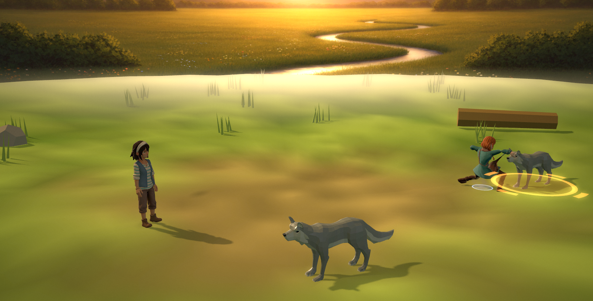
BEFORE (control, same seed, same beat, nothing equipped).
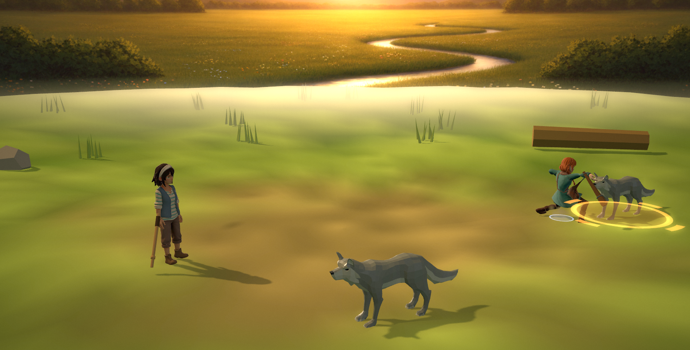
AFTER — vesper with the River Cudgel, maren with the Walking Staff.
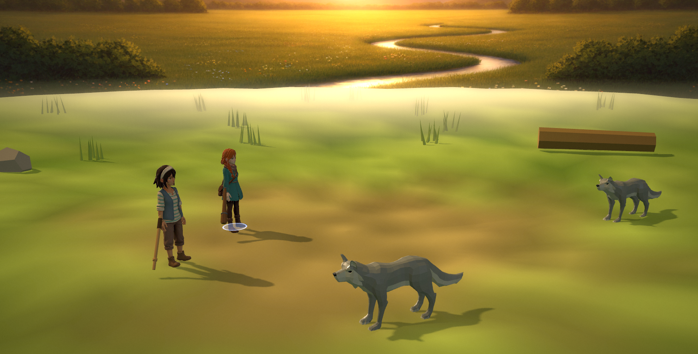
At rest: both weapons hang clear of the coat (the 3–4 cm outward offset is the one number that came from looking).
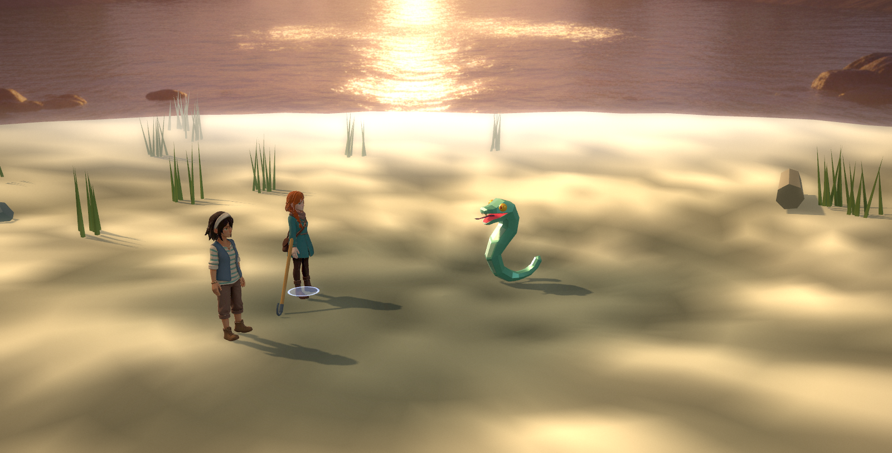
The Boat Hook — the third and last weapon in items.json.
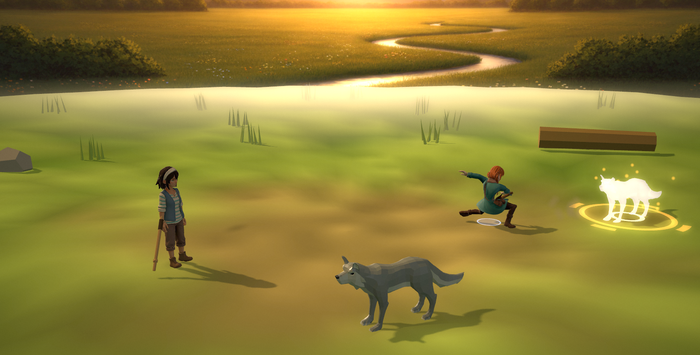
Impact, armed.
Art owed: nothing ships under assets/weapons/3d/. All three weapons are CODE recipes in the arena's
own flat-shaded prop idiom (WEAPONS in battle_stage3d.js), and tier 1 already looks for
assets/weapons/3d/<item>.glb first, so authored art supersedes a recipe with no code change.
An equipped weapon with neither is staged as an empty hand — never a placeholder cube.
Residual, by eye: a held pole follows the hand, so on clips that swing the arm across the body (the Use_Item
raise, the run) the shaft grazes the coat. A stow-on-non-attack socket is the fix and is not in this lane.
Teardown
Measured, not asserted (scratch probe, wrapped dispose counters on everything hanging off a Bone):
7 of 7 socket geometries and 7 of 7 socket materials disposed by stage.destroy(), 0 textures involved
(the recipes carry no maps). And a full battle in both ow-valley and del-cine, arena ON and arena
OFF, four battles each: SIM.gpu() returns byte-identical counts before and after
(del-cine geo 2075 / tex 44 / programs 13, unchanged).